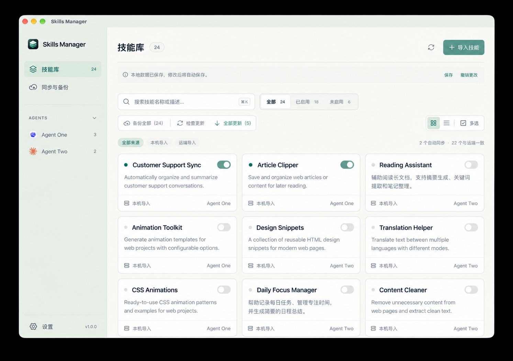

集中管理技能
通过技能库浏览与整理 Skills，让分散的技能有清晰的位置。
让多台设备上的 Skills，有处可寻。

Skills Manager 聚焦多台设备之间的 Skills 管理。用一个集中的管理界面整理技能，让需要的 Skills 更容易找到。
轻松管理多台设备间的Skills，妈妈再也不用担心我的Skills找不到啦！
通过技能库浏览与整理 Skills，让分散的技能有清晰的位置。
从搜索和导入入口开始，定位已有技能或加入新技能。
围绕同步与备份组织 Skills，照顾多台设备之间的使用需求。